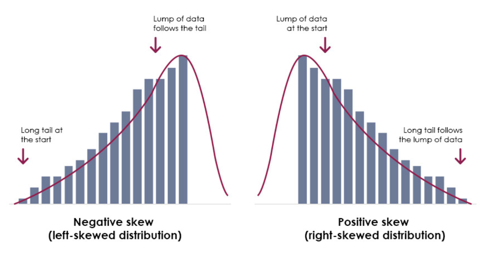

Chapter 1 Tests
1.1 Transformations
1.1.1 Log transformation
• To correct for right skewness • When considering ratios • In settings where errors are feasibly multiplicative, such as when dealing with concentrations or rates • To consider orders of magnitude (using log base 10); for example, when considering astronomical distances • Counts are often logged (though note the problem with zero counts). Income variable is generally log-transformed.

1.2 Permutation testing
Permutation testing, also known as randomization or re-randomization testing, is a non-parametric statistical method used to assess the significance of an observed outcome by comparing it to the distribution of possible outcomes under a null hypothesis. The primary idea behind permutation testing is to generate a large number of permutations of the observed data, compute a test statistic for each permutation, and then compare the observed test statistic to the distribution of permuted test statistics to determine if the observed result is statistically significant.
Here is a general outline of the permutation testing process:
Define the Null Hypothesis (H0): The null hypothesis typically states that there is no effect, no difference, or no association in the population.
Select a Test Statistic: Choose a test statistic that measures the effect or difference you are interested in. This could be a mean difference, correlation coefficient, regression coefficient, etc.
Collect and Shuffle the Data: Combine the data from different groups or conditions and shuffle the data to create random permutations. The number of permutations depends on the computational resources available and the desired precision.
Compute the Test Statistic for Each Permutation: For each permutation, calculate the test statistic based on the shuffled data.
Compare Observed Statistic to Permuted Distribution: Compare the observed test statistic to the distribution of permuted test statistics. The p-value is the proportion of permuted test statistics that are more extreme than the observed test statistic.
Draw Conclusions: If the p-value is below a predetermined significance level (e.g., 0.05), you may reject the null hypothesis in favor of the alternative hypothesis.
Permutation testing is particularly useful in situations where assumptions of parametric tests may not be met or when dealing with complex study designs. It provides a distribution-free approach to hypothesis testing, making it more robust in certain situations. However, permutation testing can be computationally intensive, especially for large datasets, as it requires generating and testing a large number of permutations.